{} Opérations des séquences (sauf
modification) applicablesnumbers = {42, -2, 0, 7, 11} print(numbers) # {0, 42, 11, -2, 7} print(len(numbers)) # 5 print(60 in numbers) # False print(type(numbers)) # <class 'set'> for element in numbers: print(element)
set()# {0, 42, 84, 21, 63} S = {n for n in range(100) if n % 3 == 0 and n % 7 == 0} # {0, 42, 12, -1} A = set([12, 42, 0, 12, 0, -1, 0]) # {'!', 'C', 'i', 'c', 'o', 'r'} B = set('Cocorico!')
add et
removeS = {1, 2, 3, 4} S.remove(1) # {2, 3, 4} S.remove(2) # {3, 4} S.add(5) # {3, 4, 5}
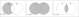
A = {1, 2, 3, 4} B = {3, 4, 5} print(A - B) # {1, 2} (différence) print(A & B) # {3, 4} (intersection) print(A | B) # {1, 2, 3, 4, 5} (union)
# L'ensemble des sous-ensembles de {1, 2, 3} A = {{}, {1}, {2}, {3}, {1, 2}, {1, 3}, {2, 3}, {1, 2, 3}}
frozensetfrozenset représente un ensemble non
modifiable Les opérations des ensembles (sauf
modification) sont applicablesset dont les éléments sont
des frozenset# L'ensemble des sous-ensembles de {1, 2, 3} A = { frozenset(), frozenset({1}), frozenset({2}), frozenset({3}), frozenset({1, 2}), frozenset({1, 3}), frozenset({2, 3}), frozenset({1, 2, 3}) }
S = {1, 2, 3} # avec un for def sumElements(S): sum = 0 for elem in S: sum += elem return sum print(sumElements(S)) # 6 # avec la fonction sum print(sum(S)) # 6
S = {1, 24, -2, 99, 16} # avec un for def maxElement(S): max = float("-inf") for elem in S: if elem > max: max = elem return max print(maxElement(S)) # 99 # avec la fonction max print(max(S)) # 99
{} Opérations des séquences (sauf
indices) applicablesphone = {'Quentin': 8723, 'Cédric': 2837, 'Nathalie': 4872} print(phone) # {'Quentin': 8723, 'Cédric': 2837, # 'Nathalie': 4872} print(len(phone)) # 3 print('Cédric' in phone) # True print(type(phone)) # <class 'dict'>
{}
Attention à ne pas confondre avec l’ensemble vide# {1: 1, 3: 9, 9: 81, 5: 25, 7: 49} square = {n : n ** 2 for n in range(1,10) if n % 2 != 0} # {'A': 65, 'C': 67, 'B': 66, 'E': 69, 'D': 68, 'F': 70} mapping = {chr(i): i for i in range(65, 71)}
del= : provoque une erreur
(accès)= : ajoute une paire clé-valeur au
dictionnaire (assignation)price = {"lemon": 0.85, "pear": 1} price['lemon'] = 0.90 # {"lemon": 0.90, "pear": 1} price['apple'] = 1.00 # {"lemon": 0.90, "pear": 1, "apple": 1} del(price['pear']) # {"lemon": 0.90, "apple": 1}
keys(), aux paires avec
items() et aux valeurs avec la méthode
values() Renvoient de séquences que l’on peut
convertir en listeprint(list(price.keys())) # ['lemon', 'pear', 'apple'] print(list(price.items())) # [('lemon', 0.9), ('pear', 1.0), ('apple', 1.0)] print(list(price.values()))# [0.9, 1.0, 1.0] # Parcours des clés explicite for fruit in price.keys(): print(fruit, price[fruit], sep=' : ') # Parcours des clés implicite for fruit in price: print(fruit, price[fruit], sep=' : ') # Parcours des clés et valeurs for key, value in price.items(): print(key, value, sep=' : ') # Parcours des valeurs seulement for value in price.values(): print(value)
in# Stockage d'informations d'étudiants avec recherche par matricule efficace students = { "11111": {"firstname": "Peter", "lastname": "Parker"}, "11112": {"firstname": "Sarah", "lastname": "Connor"}, } # Stockage d'informations d'étudiants avec importance de l'ordre students = [ {"matricule": "11111", "firstname": "Peter", "lastname": "Parker"}, {"matricule": "11112", "firstname": "Sarah", "lastname": "Connor"}, ]
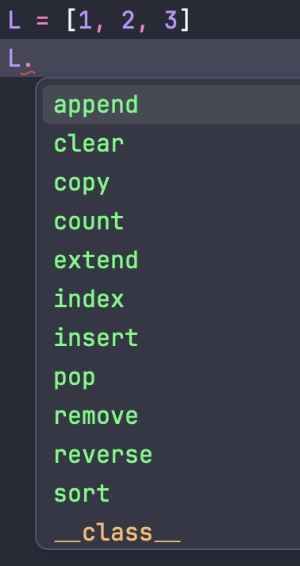
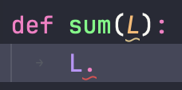
L est inconnu
pas d’aide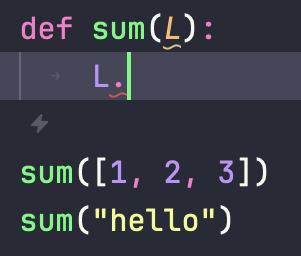
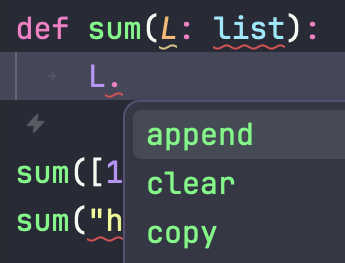
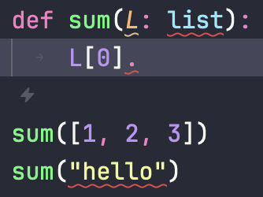
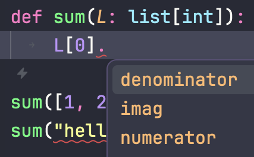
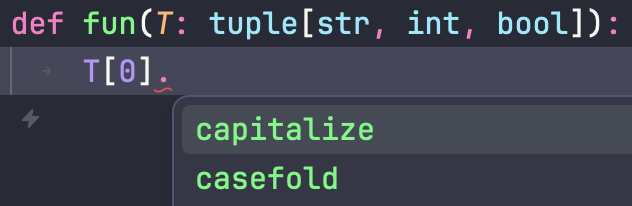
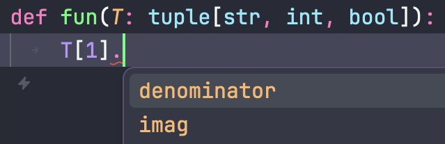
def fun(T: tuple[int, ...]): ...
def fun(D: dict[str, int]): D['un'] = 1
Hashable)from typing import Hashable, Any def add_key_value(D: dict, k: Hashable, v: Any): D[k] = v
Any accepte n’importe quoi.def sum(x: str | bool): ...
None est acceptéfrom typing import Optional def sum(x: Optional[int]): ...
def sum(x: int | None): ...
def sum(L: list[int]) -> int: res = 0 for elem in L: res += elem return res
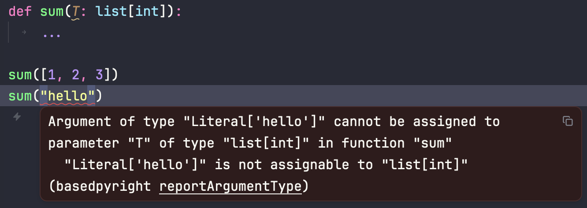
La vérification de type par défaut de Zed est très stricte.
Si vous voulez opter pour un vérificateur plus léger, vous pouvez le changer dans le fichier de configuration de Zed.
Vous pourvez accéder à ce fichier dans
File > Settings > Open Settings File
Ajoutez ce qui suit à la fin du fichier, juste avant la dernière accollade:
"languages": { "Python": { "language_servers": ["ty", "ruff"] } }
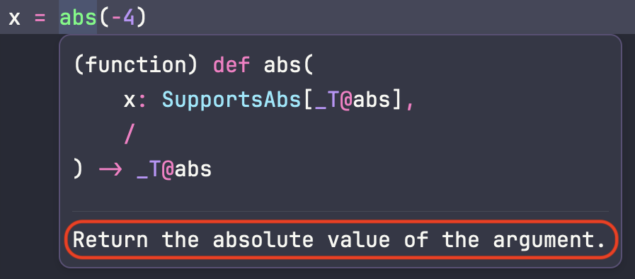
docstringdocstring en
début de fonction avec des triples ' ou "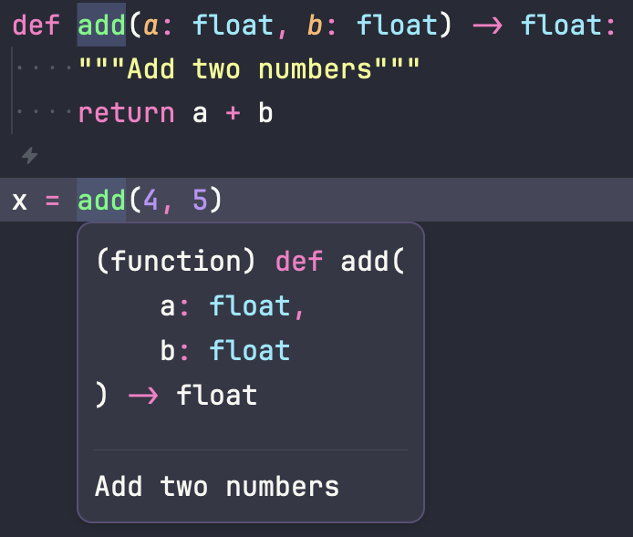